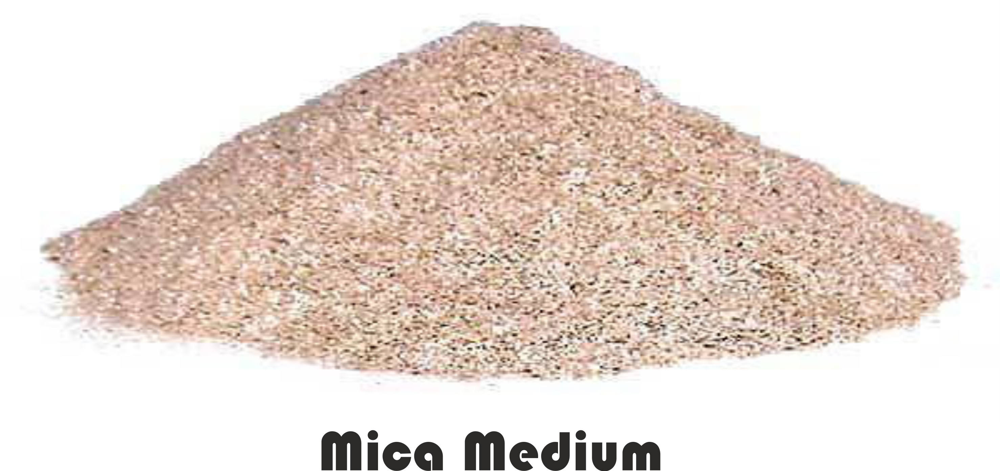

Mica Powder
Mica Powder is chemically inert, immune to climatic variations, non toxic, transparent and water proof. Mica is a naturally occurring stone mineral with shiny flakes which is its powdered form is known as mica powder. Therefore, mica powder is soft and sparkly like very fine glitter. It is used to give a metallic or shimmery pearl-like effect. As an element, mica is optically flat, translucent and elastic in nature.
The Followings Are General Characteristics Of Mica Powder:
-
It is highly inert to the action of light, heat electricity, water and other chemicals.
-
It transmits and reflects light and prevents penetration of sun rays, moisture, heat, gases etc. on the surface on which it's coated.
-
It has very high lubrication value thus used as High temperature grease, mould release etc., dusting surface and anti friction powder of compounds.
-
It has excellent di-electric & thermal insulation properties.
-
It produces lifting effects in liquid products due to low specific gravity and as such, remains uniformly dispersed over the surface of liquid vehicles.
-
It has very little abrasive effect and can easily get wetted by resin and dyes.
-
It has an excellent anti-sticking property and as such, during vulcanization, it prevents sticking and movement of sulphur, at the same time, it permits the air bubbles to escape
Mica- Coarse / Medium / Fine

Chemical Analysis Of Dry Ground Mica Powder
| Alumina |
(AL2O3) |
23-40% |
| Silica |
(SL2O3) |
42-50% |
| Iron |
(FE2O3) |
1-5% |
| Potash |
(K2O |
7-9% |
| Calcium Oxide |
(CAO) |
0.21-0.35% |
| Magnesia |
(MGO) |
0.21-0.35% |
| Titanium Oxide |
(TIO2) |
TRACES |
| Sodium Oxide |
(NA2O) |
0.62-0.98% |
| Magnanese |
(MNO2) |
TRACES |
| Sulphar |
(S) |
TRACES |
| Phosophorus |
(P) |
0.02-0.03% |
| Moisture At 100C |
|
0.10% |
| Loss of Ignition |
|
03-05% |
Physical Properties Of Dry Ground Mica Powder
| Specific Gravity GM/CM3 |
2.80-2.85 |
| HARDNESS (MOSH SCALE) |
2.5 |
| PH |
8 |
| INSOLUBILITY HYDROCHLORIC ACID |
94.00% |
| APP ARENT DENSITY 1BS/CU.FT. |
12-SHP |
| WET BULKING VALUE GRAMS/1B |
0.04257 |
| OIL ABSORPTION (GM LINSEED OIL/100GM MICA) |
45-50 |
| SOLUBILITY IN WATER B/100ML |
0.008 |
| REFRACTIVE INDEX: |
MIN-1.57 MAX-1.59 |
| WHITENESS A. AMBER FILTER: |
|
| B. GREEN FILTER |
|
| C. BLUE FILTER |
81 |
| 79 |
|
| SOLUBILITY IN 10/00 ACETIC ACID, G/100ML |
0.008 |
| SOLUBILITY IN 50/00 ACETIC ACID, G/100ML |
0.01 |
 This site is under construction.
This site is under construction.